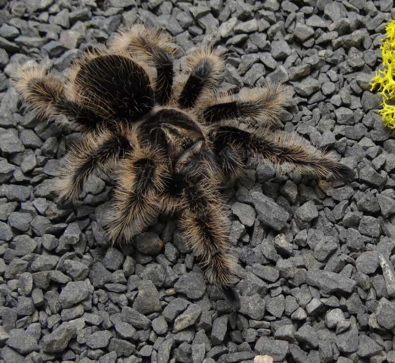
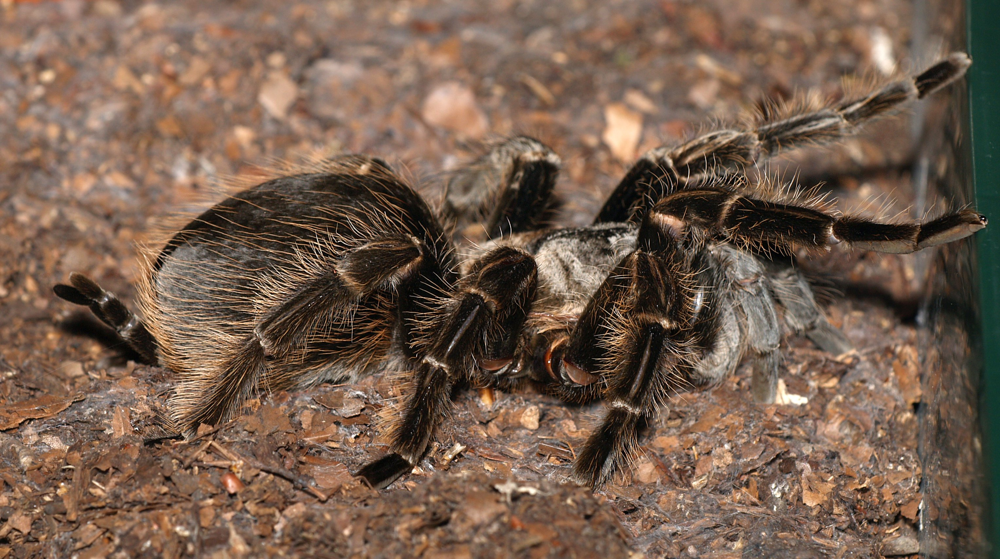

Pochodzenie
Nikaragua, Kostaryka, Honduras
Wielkość
Samice: 14–16 cm rozpiętości
Samce: 12–14 cm
Długość życia
Samice: 12–15 lat
Samce: 3–5 lat
Aktywność
Nocna, w dzień przebywa w kryjówkach
Typ
Naziemny, kopiący
Tliltocatl albopilosus – naziemny gatunek o charakterystycznym skręconym owłosieniu

Nikaragua, Kostaryka, Honduras
Samice: 14–16 cm rozpiętości
Samce: 12–14 cm
Samice: 12–15 lat
Samce: 3–5 lat
Nocna, w dzień przebywa w kryjówkach
Naziemny, kopiący

22–26°C, nocą 20–22°C
65–75%, lekkie zraszanie podłoża
Nie wymagane, unika światła
Włókno kokosowe lub torf, dobrze ubite
Stały dostęp do miski z wodą
Usuwanie resztek owadów, wymiana podłoża co 2–3 miesiące

Karmienie co 5–7 dni, młode częściej. Nie podawać tłustych larw jako podstawy diety.